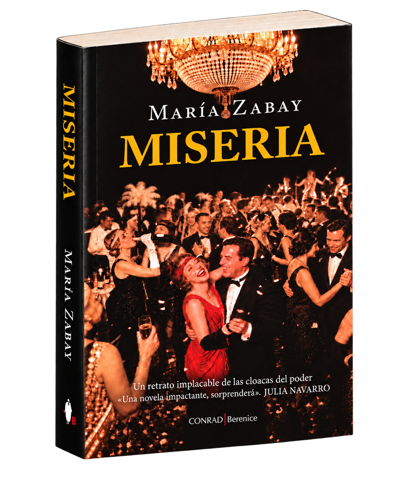

Miseria · María Zabay · Prensa
Radio y televisión
Entrevistas, programas y apariciones en radio y televisión dedicados a Miseria y a su autora.

Archivo de prensa
Miseria · María Zabay · Prensa
Entrevistas, programas y apariciones en radio y televisión dedicados a Miseria y a su autora.
